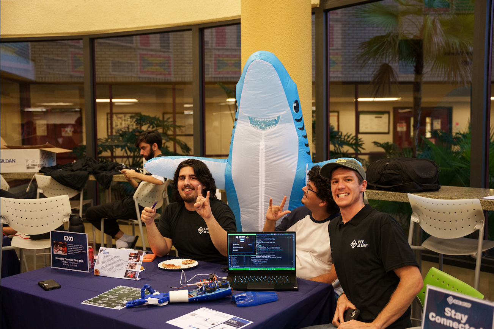
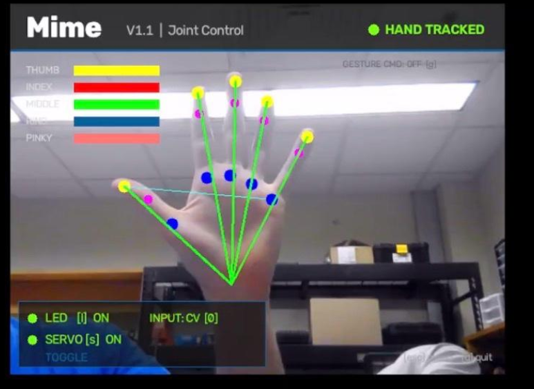
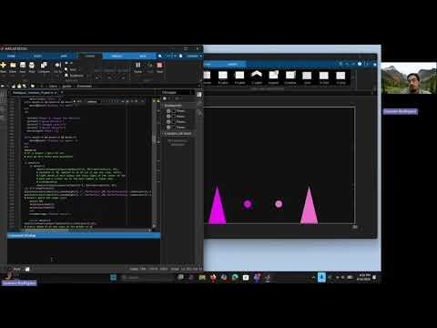

Mechanical engineering coursework, research, technical projects, and the work that sits between school and the lab.
FEATURED ACADEMICPROJECT / RESEARCH
LEADERSHIP / RESEARCH / DESIGN
IEEE EXO
IEEE EXO belongs on both sides of the site: it is a leadership role, a multidisciplinary engineering program, and a biomechanics research effort. I lead the lower-limb exoskeleton program while developing gait-data requirements, actuator sizing inputs, control architecture, mechanical concepts, and test planning.

BIOMECHANICS / OPENSIM
Gait comparison analysis
OpenSim analysis used to compare gait mechanics across healthy, hemiparetic, and SHIA datasets. The work focuses on extracting comparable joint behavior, scaling subject models, reviewing gait-cycle differences, and turning those differences into useful inputs for exoskeleton assistance timing and torque requirements.
OS gait comparison
BIOMECHANICS / EMBEDDED SYSTEMS / SOLIDWORKS
Rugby lineout sensor module
CARRT project developing a modular ESP32 + IMU sensor for rugby lineout motion capture. I designed the SolidWorks enclosure around ankle and thigh use, shrinking its footprint from 80 × 60 mm to 43 × 32 mm (71.3% smaller). The modular case includes ventilation and integrated adjustable strap slots, replacing the need to depend on athletic tape or an athletic sleeve for retention. The housing was designed around a PCB I helped validate, and I supported PCB/layout decisions aimed at fitting the electronics into the smaller package.
IMU ankle + thigh module
PCB DESIGN / ALTIUM / IEEE WORKSHOPS
Altium PCB design coursework + workshops
Currently completing Altium Education PCB Design coursework covering schematic capture, board layout, routing, and a hands-on capstone board, while also participating in IEEE Altium PCB design workshops for additional hands-on schematic and layout practice. The Altium Education PCB Design Certificate is in progress.
PCB certificate in progress
ROBOTICS / COMPUTER VISION
Mime robotic hand
5-DOF tendon-actuated robotic hand work combining ESP32 control, PCA9685 servo driving, MG996R actuators, Python, MediaPipe hand tracking, calibration, testing, and interface development.

CAD / SOLIDWORKS
Steam Locomotive
SolidWorks wind-up steam locomotive keychain project with axle-driven motion, assembly drawings, part drawings, BOM development, motion review, and 3D-print-oriented design documentation.
MATLAB / PROGRAMMING
Ultimate Shape Fight
Two-player MATLAB game with selectable characters, attack and counter logic, animated graphics, health tracking, user input, and game-state progression.

Education
University of South Florida · Tampa
B.S. Mechanical Engineering
Expected December 2028 · GPA 3.33
StaticsMechanics of SolidsThermodynamicsMaterialsCADDynamicsPCB Design / Altium
Hillsborough Community College
Associate of Arts
2022–2024 · GPA 3.8
Engineering prerequisitesMathematicsPhysics
Credentials + technical training
CSWA CAD DesignCSWA SustainabilityLean Six Sigma Yellow BeltCITI Human ResearchElectronics FoundationsAltium PCB Design · Coursework in ProgressIEEE Altium PCB Design WorkshopsAltium PCB Design Certificate · In Progress